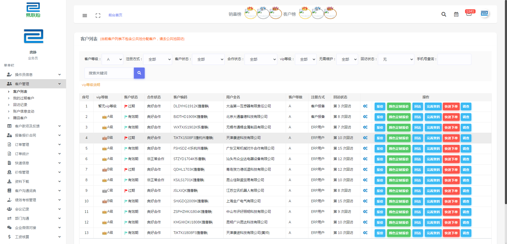
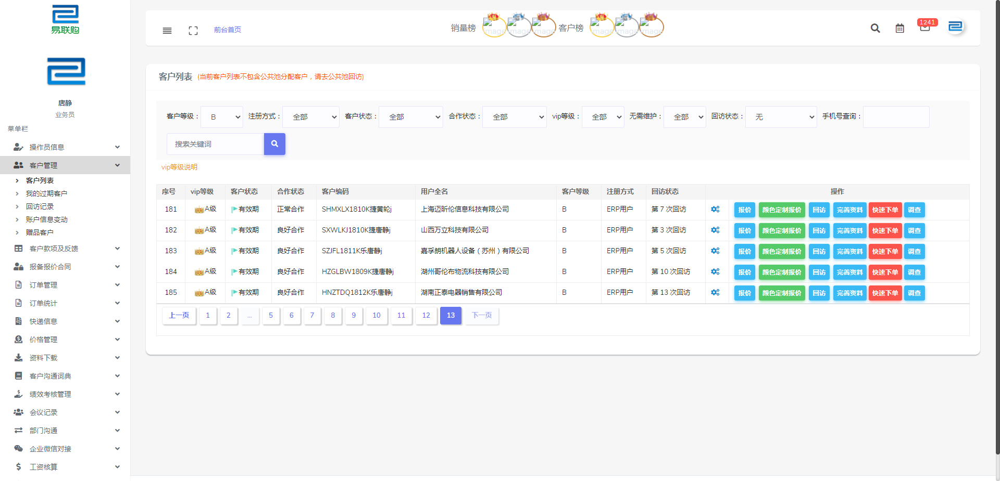
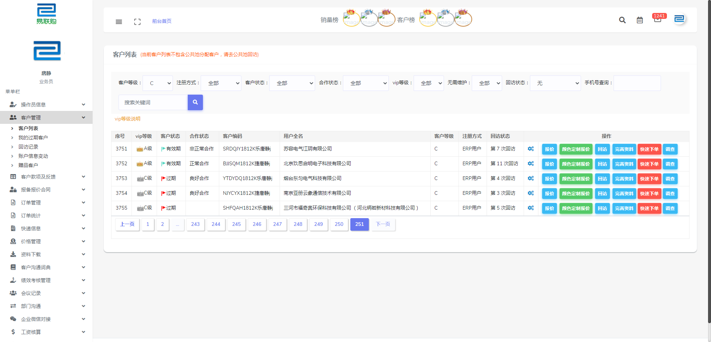
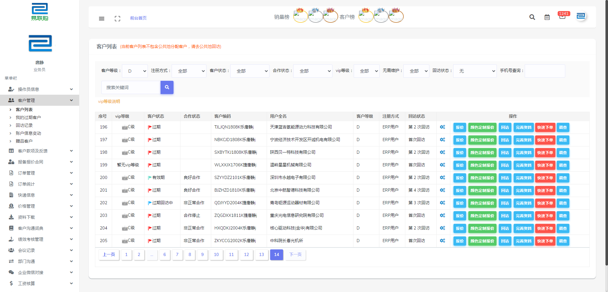

Report generated on 29-Jul-2021 at 16:33:26 by pytest-html v3.0.0
| JAVA_HOME | C:\Program Files\Java\jdk1.8.0_261 |
| Packages | {"pluggy": "0.13.1", "py": "1.10.0", "pytest": "6.1.2"} |
| Platform | Windows-7-6.1.7601-SP1 |
| Plugins | {"allure-pytest": "2.9.43", "assume": "2.4.3", "cov": "2.12.1", "forked": "1.3.0", "html": "3.0.0", "metadata": "1.11.0", "ordering": "0.6", "parallel": "0.1.0", "rerunfailures": "9.1.1", "xdist": "2.3.0"} |
| Python | 3.8.1 |
4 tests ran in 308.29 seconds.
(Un)check the boxes to filter the results.
0 passed, 0 skipped, 4 failed, 0 errors, 0 expected failures, 0 unexpected passes, 4 rerun| Result | Description | Test | Duration | Links |
|---|---|---|---|---|
| No results found. Try to check the filters | ||||
| Failed |
模拟点击客户等级下拉框筛选客户
|
test_dir/test_customer.py::TestCustomer::test_customer_rank_case[A] | 77.91 | |
|
 self = <test_dir.test_customer.TestCustomer object at 0x0000000004943B20>, browser = <selenium.webdriver.chrome.webdriver.WebDriver (session="afa25724283f58a8cebb964766c77ea6")>, base_url = 'http://newtest.elinkbuy.cn', client_rank = 'A' @pytest.mark.parametrize( "client_rank", ['A', 'B', 'C', 'D'] ) def test_customer_rank_case(self, browser, base_url, client_rank): """ 模拟点击客户等级下拉框筛选客户 """ self.login(browser, base_url) self.page = CustomerPage(browser) flag = self.close_layer() # 关闭弹层 if flag: self.page.customer_menu.click() # 点击客户管理菜单栏 else: print("弹层关闭失败") self.page.customer_list.click() # 点击客户列表菜单 self.page.search_client_rank.select_by_visible_text(client_rank) # 选择客户等级A self.page.search_btn.click() # 点击搜索按钮 sleep(2) pagination = self.page.pagination # 分页 if len(pagination) > 0: self.page.window_scroll(None, 1000) self.page.last_page.click() # 点击最后一页 sleep(2) total_text = int(self.page.last_sort.text) result = 0 db_conn = DB(ip='47.103.83.160', user='root', passwd='c587024e9ec3ea0a', db='ylg') user = self.get_user() sql = "SELECT count(1) FROM `xy_client` WHERE `staff_id` = 5 AND `clientkind` = 1 AND `tradekindid` <> 2 AND `closed` = 'F' AND `client_rank` ='" + client_rank + "'" if user['roles_str'] in [87, 91]: sql = "SELECT count(1) total FROM `xy_client` WHERE `staff_id` = 5 AND `clientkind` = 1 AND `tradekindid` <> 2 AND `closed` = 'F' AND `client_rank` ='" + client_rank + "' and `high_quality` = 0" clients = db_conn.query(sql) if clients: > result = clients[0]['total'] E KeyError: 'total' test_dir\test_customer.py:106: KeyErrorself = <test_dir.test_customer.TestCustomer object at 0x0000000004B54520>, browser = <selenium.webdriver.chrome.webdriver.WebDriver (session="afa25724283f58a8cebb964766c77ea6")>, base_url = 'http://newtest.elinkbuy.cn', client_rank = 'A' @pytest.mark.parametrize( "client_rank", ['A', 'B', 'C', 'D'] ) def test_customer_rank_case(self, browser, base_url, client_rank): """ 模拟点击客户等级下拉框筛选客户 """ self.login(browser, base_url) self.page = CustomerPage(browser) flag = self.close_layer() # 关闭弹层 if flag: self.page.customer_menu.click() # 点击客户管理菜单栏 else: print("弹层关闭失败") self.page.customer_list.click() # 点击客户列表菜单 self.page.search_client_rank.select_by_visible_text(client_rank) # 选择客户等级A self.page.search_btn.click() # 点击搜索按钮 sleep(2) pagination = self.page.pagination # 分页 if len(pagination) > 0: self.page.window_scroll(None, 1000) self.page.last_page.click() # 点击最后一页 sleep(2) total_text = int(self.page.last_sort.text) result = 0 db_conn = DB(ip='47.103.83.160', user='root', passwd='c587024e9ec3ea0a', db='ylg') user = self.get_user() sql = "SELECT count(1) FROM `xy_client` WHERE `staff_id` = 5 AND `clientkind` = 1 AND `tradekindid` <> 2 AND `closed` = 'F' AND `client_rank` ='" + client_rank + "'" if user['roles_str'] in [87, 91]: sql = "SELECT count(1) total FROM `xy_client` WHERE `staff_id` = 5 AND `clientkind` = 1 AND `tradekindid` <> 2 AND `closed` = 'F' AND `client_rank` ='" + client_rank + "' and `high_quality` = 0" clients = db_conn.query(sql) if clients: > result = clients[0]['total'] E KeyError: 'total' test_dir\test_customer.py:106: KeyError ------------------------------Captured stdout call------------------------------ 2021-07-29 16:28:21,840 INFO ✅ Find element: name=staff_name 2021-07-29 16:28:22,995 INFO 🖋 input element: 登录用户名 2021-07-29 16:28:23,080 INFO ✅ Find element: name=password 2021-07-29 16:28:24,057 INFO 🖋 input element: 登录密码 2021-07-29 16:28:24,123 INFO ✅ Find element: css selector=.card-body>form>div.form-group>button.btn 2021-07-29 16:28:25,065 INFO 🖱 click element: 登录按钮 2021-07-29 16:28:41,148 INFO ✨ Find 8 elements through: class_name=layui-m-layer, describe:layer弹窗 2021-07-29 16:28:41,170 INFO ✨ Find 8 elements through: class_name=layui-m-layershade, describe:layer弹窗蒙层 2021-07-29 16:28:41,285 INFO ✅ Find element: id=pytestCustomerMenu 2021-07-29 16:28:42,230 INFO 🖱 click element: 客户管理菜单栏 2021-07-29 16:28:42,357 INFO ✅ Find element: id=pytestCustomerList 2021-07-29 16:28:43,315 INFO 🖱 click element: 客户列表/我的客户菜单 2021-07-29 16:28:48,167 INFO ✅ Find element: name=search_client_rank 2021-07-29 16:28:49,461 INFO ✅ Find element: id=pytestCustomerSearchBtn 2021-07-29 16:28:50,406 INFO 🖱 click element: 搜索按钮 2021-07-29 16:28:59,860 INFO ✨ Find 0 elements through: xpath=//td[@id='pytestCustomerListPage']/ul[@class='pagination']/li, describe:分页 2021-07-29 16:28:59,891 INFO ✅ Find element: xpath=//div[@class='table-responsive']/table/tbody[@id='content']/tr[last()]/td[@id='pytestCustomerListSort'] -------------------------------Captured log call-------------------------------- INFO poium:logging.py:18 INFO ✅ Find element: name=staff_name INFO poium:logging.py:18 INFO 🖋 input element: 登录用户名 INFO poium:logging.py:18 INFO ✅ Find element: name=password INFO poium:logging.py:18 INFO 🖋 input element: 登录密码 INFO poium:logging.py:18 INFO ✅ Find element: css selector=.card-body>form>div.form-group>button.btn INFO poium:logging.py:18 INFO 🖱 click element: 登录按钮 INFO poium:logging.py:18 INFO ✨ Find 8 elements through: class_name=layui-m-layer, describe:layer弹窗 INFO poium:logging.py:18 INFO ✨ Find 8 elements through: class_name=layui-m-layershade, describe:layer弹窗蒙层 INFO poium:logging.py:18 INFO ✅ Find element: id=pytestCustomerMenu INFO poium:logging.py:18 INFO 🖱 click element: 客户管理菜单栏 INFO poium:logging.py:18 INFO ✅ Find element: id=pytestCustomerList INFO poium:logging.py:18 INFO 🖱 click element: 客户列表/我的客户菜单 INFO poium:logging.py:18 INFO ✅ Find element: name=search_client_rank INFO poium:logging.py:18 INFO ✅ Find element: id=pytestCustomerSearchBtn INFO poium:logging.py:18 INFO 🖱 click element: 搜索按钮 INFO poium:logging.py:18 INFO ✨ Find 0 elements through: xpath=//td[@id='pytestCustomerListPage']/ul[@class='pagination']/li, describe:分页 INFO poium:logging.py:18 INFO ✅ Find element: xpath=//div[@class='table-responsive']/table/tbody[@id='content']/tr[last()]/td[@id='pytestCustomerListSort'] ------------------------------Captured stdout call------------------------------ 2021-07-29 16:29:19,248 INFO ✨ Find 8 elements through: class_name=layui-m-layer, describe:layer弹窗 2021-07-29 16:29:19,279 INFO ✨ Find 8 elements through: class_name=layui-m-layershade, describe:layer弹窗蒙层 2021-07-29 16:29:19,388 INFO ✅ Find element: id=pytestCustomerMenu 2021-07-29 16:29:20,348 INFO 🖱 click element: 客户管理菜单栏 2021-07-29 16:29:20,416 INFO ✅ Find element: id=pytestCustomerList 2021-07-29 16:29:21,359 INFO 🖱 click element: 客户列表/我的客户菜单 2021-07-29 16:29:24,733 INFO ✅ Find element: name=search_client_rank 2021-07-29 16:29:26,058 INFO ✅ Find element: id=pytestCustomerSearchBtn 2021-07-29 16:29:27,030 INFO 🖱 click element: 搜索按钮 2021-07-29 16:29:36,447 INFO ✨ Find 0 elements through: xpath=//td[@id='pytestCustomerListPage']/ul[@class='pagination']/li, describe:分页 2021-07-29 16:29:36,479 INFO ✅ Find element: xpath=//div[@class='table-responsive']/table/tbody[@id='content']/tr[last()]/td[@id='pytestCustomerListSort'] -------------------------------Captured log call-------------------------------- INFO poium:logging.py:18 INFO ✨ Find 8 elements through: class_name=layui-m-layer, describe:layer弹窗 INFO poium:logging.py:18 INFO ✨ Find 8 elements through: class_name=layui-m-layershade, describe:layer弹窗蒙层 INFO poium:logging.py:18 INFO ✅ Find element: id=pytestCustomerMenu INFO poium:logging.py:18 INFO 🖱 click element: 客户管理菜单栏 INFO poium:logging.py:18 INFO ✅ Find element: id=pytestCustomerList INFO poium:logging.py:18 INFO 🖱 click element: 客户列表/我的客户菜单 INFO poium:logging.py:18 INFO ✅ Find element: name=search_client_rank INFO poium:logging.py:18 INFO ✅ Find element: id=pytestCustomerSearchBtn INFO poium:logging.py:18 INFO 🖱 click element: 搜索按钮 INFO poium:logging.py:18 INFO ✨ Find 0 elements through: xpath=//td[@id='pytestCustomerListPage']/ul[@class='pagination']/li, describe:分页 INFO poium:logging.py:18 INFO ✅ Find element: xpath=//div[@class='table-responsive']/table/tbody[@id='content']/tr[last()]/td[@id='pytestCustomerListSort'] | ||||
| Failed |
模拟点击客户等级下拉框筛选客户
|
test_dir/test_customer.py::TestCustomer::test_customer_rank_case[B] | 74.59 | |
|
 self = <test_dir.test_customer.TestCustomer object at 0x00000000049CB4F0>, browser = <selenium.webdriver.chrome.webdriver.WebDriver (session="afa25724283f58a8cebb964766c77ea6")>, base_url = 'http://newtest.elinkbuy.cn', client_rank = 'B' @pytest.mark.parametrize( "client_rank", ['A', 'B', 'C', 'D'] ) def test_customer_rank_case(self, browser, base_url, client_rank): """ 模拟点击客户等级下拉框筛选客户 """ self.login(browser, base_url) self.page = CustomerPage(browser) flag = self.close_layer() # 关闭弹层 if flag: self.page.customer_menu.click() # 点击客户管理菜单栏 else: print("弹层关闭失败") self.page.customer_list.click() # 点击客户列表菜单 self.page.search_client_rank.select_by_visible_text(client_rank) # 选择客户等级A self.page.search_btn.click() # 点击搜索按钮 sleep(2) pagination = self.page.pagination # 分页 if len(pagination) > 0: self.page.window_scroll(None, 1000) self.page.last_page.click() # 点击最后一页 sleep(2) total_text = int(self.page.last_sort.text) result = 0 db_conn = DB(ip='47.103.83.160', user='root', passwd='c587024e9ec3ea0a', db='ylg') user = self.get_user() sql = "SELECT count(1) FROM `xy_client` WHERE `staff_id` = 5 AND `clientkind` = 1 AND `tradekindid` <> 2 AND `closed` = 'F' AND `client_rank` ='" + client_rank + "'" if user['roles_str'] in [87, 91]: sql = "SELECT count(1) total FROM `xy_client` WHERE `staff_id` = 5 AND `clientkind` = 1 AND `tradekindid` <> 2 AND `closed` = 'F' AND `client_rank` ='" + client_rank + "' and `high_quality` = 0" clients = db_conn.query(sql) if clients: > result = clients[0]['total'] E KeyError: 'total' test_dir\test_customer.py:106: KeyErrorself = <test_dir.test_customer.TestCustomer object at 0x0000000004B78DC0>, browser = <selenium.webdriver.chrome.webdriver.WebDriver (session="afa25724283f58a8cebb964766c77ea6")>, base_url = 'http://newtest.elinkbuy.cn', client_rank = 'B' @pytest.mark.parametrize( "client_rank", ['A', 'B', 'C', 'D'] ) def test_customer_rank_case(self, browser, base_url, client_rank): """ 模拟点击客户等级下拉框筛选客户 """ self.login(browser, base_url) self.page = CustomerPage(browser) flag = self.close_layer() # 关闭弹层 if flag: self.page.customer_menu.click() # 点击客户管理菜单栏 else: print("弹层关闭失败") self.page.customer_list.click() # 点击客户列表菜单 self.page.search_client_rank.select_by_visible_text(client_rank) # 选择客户等级A self.page.search_btn.click() # 点击搜索按钮 sleep(2) pagination = self.page.pagination # 分页 if len(pagination) > 0: self.page.window_scroll(None, 1000) self.page.last_page.click() # 点击最后一页 sleep(2) total_text = int(self.page.last_sort.text) result = 0 db_conn = DB(ip='47.103.83.160', user='root', passwd='c587024e9ec3ea0a', db='ylg') user = self.get_user() sql = "SELECT count(1) FROM `xy_client` WHERE `staff_id` = 5 AND `clientkind` = 1 AND `tradekindid` <> 2 AND `closed` = 'F' AND `client_rank` ='" + client_rank + "'" if user['roles_str'] in [87, 91]: sql = "SELECT count(1) total FROM `xy_client` WHERE `staff_id` = 5 AND `clientkind` = 1 AND `tradekindid` <> 2 AND `closed` = 'F' AND `client_rank` ='" + client_rank + "' and `high_quality` = 0" clients = db_conn.query(sql) if clients: > result = clients[0]['total'] E KeyError: 'total' test_dir\test_customer.py:106: KeyError ------------------------------Captured stdout call------------------------------ 2021-07-29 16:29:55,441 INFO ✨ Find 8 elements through: class_name=layui-m-layer, describe:layer弹窗 2021-07-29 16:29:55,469 INFO ✨ Find 8 elements through: class_name=layui-m-layershade, describe:layer弹窗蒙层 2021-07-29 16:29:55,587 INFO ✅ Find element: id=pytestCustomerMenu 2021-07-29 16:29:56,542 INFO 🖱 click element: 客户管理菜单栏 2021-07-29 16:29:56,624 INFO ✅ Find element: id=pytestCustomerList 2021-07-29 16:29:57,589 INFO 🖱 click element: 客户列表/我的客户菜单 2021-07-29 16:30:01,243 INFO ✅ Find element: name=search_client_rank 2021-07-29 16:30:02,577 INFO ✅ Find element: id=pytestCustomerSearchBtn 2021-07-29 16:30:03,533 INFO 🖱 click element: 搜索按钮 2021-07-29 16:30:08,267 INFO ✨ Find 13 elements through: xpath=//td[@id='pytestCustomerListPage']/ul[@class='pagination']/li, describe:分页 2021-07-29 16:30:08,314 INFO ✅ Find element: xpath=//td[@id='pytestCustomerListPage']/ul[@class='pagination']/li[last()-1] 2021-07-29 16:30:09,292 INFO 🖱 click element: 最后一页 2021-07-29 16:30:15,778 INFO ✅ Find element: xpath=//div[@class='table-responsive']/table/tbody[@id='content']/tr[last()]/td[@id='pytestCustomerListSort'] -------------------------------Captured log call-------------------------------- INFO poium:logging.py:18 INFO ✨ Find 8 elements through: class_name=layui-m-layer, describe:layer弹窗 INFO poium:logging.py:18 INFO ✨ Find 8 elements through: class_name=layui-m-layershade, describe:layer弹窗蒙层 INFO poium:logging.py:18 INFO ✅ Find element: id=pytestCustomerMenu INFO poium:logging.py:18 INFO 🖱 click element: 客户管理菜单栏 INFO poium:logging.py:18 INFO ✅ Find element: id=pytestCustomerList INFO poium:logging.py:18 INFO 🖱 click element: 客户列表/我的客户菜单 INFO poium:logging.py:18 INFO ✅ Find element: name=search_client_rank INFO poium:logging.py:18 INFO ✅ Find element: id=pytestCustomerSearchBtn INFO poium:logging.py:18 INFO 🖱 click element: 搜索按钮 INFO poium:logging.py:18 INFO ✨ Find 13 elements through: xpath=//td[@id='pytestCustomerListPage']/ul[@class='pagination']/li, describe:分页 INFO poium:logging.py:18 INFO ✅ Find element: xpath=//td[@id='pytestCustomerListPage']/ul[@class='pagination']/li[last()-1] INFO poium:logging.py:18 INFO 🖱 click element: 最后一页 INFO poium:logging.py:18 INFO ✅ Find element: xpath=//div[@class='table-responsive']/table/tbody[@id='content']/tr[last()]/td[@id='pytestCustomerListSort'] ------------------------------Captured stdout call------------------------------ 2021-07-29 16:30:34,558 INFO ✨ Find 8 elements through: class_name=layui-m-layer, describe:layer弹窗 2021-07-29 16:30:34,570 INFO ✨ Find 8 elements through: class_name=layui-m-layershade, describe:layer弹窗蒙层 2021-07-29 16:30:34,664 INFO ✅ Find element: id=pytestCustomerMenu 2021-07-29 16:30:35,619 INFO 🖱 click element: 客户管理菜单栏 2021-07-29 16:30:35,707 INFO ✅ Find element: id=pytestCustomerList 2021-07-29 16:30:36,656 INFO 🖱 click element: 客户列表/我的客户菜单 2021-07-29 16:30:40,181 INFO ✅ Find element: name=search_client_rank 2021-07-29 16:30:41,513 INFO ✅ Find element: id=pytestCustomerSearchBtn 2021-07-29 16:30:42,476 INFO 🖱 click element: 搜索按钮 2021-07-29 16:30:47,258 INFO ✨ Find 13 elements through: xpath=//td[@id='pytestCustomerListPage']/ul[@class='pagination']/li, describe:分页 2021-07-29 16:30:47,273 INFO ✅ Find element: xpath=//td[@id='pytestCustomerListPage']/ul[@class='pagination']/li[last()-1] 2021-07-29 16:30:48,265 INFO 🖱 click element: 最后一页 2021-07-29 16:30:51,841 INFO ✅ Find element: xpath=//div[@class='table-responsive']/table/tbody[@id='content']/tr[last()]/td[@id='pytestCustomerListSort'] -------------------------------Captured log call-------------------------------- INFO poium:logging.py:18 INFO ✨ Find 8 elements through: class_name=layui-m-layer, describe:layer弹窗 INFO poium:logging.py:18 INFO ✨ Find 8 elements through: class_name=layui-m-layershade, describe:layer弹窗蒙层 INFO poium:logging.py:18 INFO ✅ Find element: id=pytestCustomerMenu INFO poium:logging.py:18 INFO 🖱 click element: 客户管理菜单栏 INFO poium:logging.py:18 INFO ✅ Find element: id=pytestCustomerList INFO poium:logging.py:18 INFO 🖱 click element: 客户列表/我的客户菜单 INFO poium:logging.py:18 INFO ✅ Find element: name=search_client_rank INFO poium:logging.py:18 INFO ✅ Find element: id=pytestCustomerSearchBtn INFO poium:logging.py:18 INFO 🖱 click element: 搜索按钮 INFO poium:logging.py:18 INFO ✨ Find 13 elements through: xpath=//td[@id='pytestCustomerListPage']/ul[@class='pagination']/li, describe:分页 INFO poium:logging.py:18 INFO ✅ Find element: xpath=//td[@id='pytestCustomerListPage']/ul[@class='pagination']/li[last()-1] INFO poium:logging.py:18 INFO 🖱 click element: 最后一页 INFO poium:logging.py:18 INFO ✅ Find element: xpath=//div[@class='table-responsive']/table/tbody[@id='content']/tr[last()]/td[@id='pytestCustomerListSort'] | ||||
| Failed |
模拟点击客户等级下拉框筛选客户
|
test_dir/test_customer.py::TestCustomer::test_customer_rank_case[C] | 73.30 | |
|
 self = <test_dir.test_customer.TestCustomer object at 0x00000000049CBDC0>, browser = <selenium.webdriver.chrome.webdriver.WebDriver (session="afa25724283f58a8cebb964766c77ea6")>, base_url = 'http://newtest.elinkbuy.cn', client_rank = 'C' @pytest.mark.parametrize( "client_rank", ['A', 'B', 'C', 'D'] ) def test_customer_rank_case(self, browser, base_url, client_rank): """ 模拟点击客户等级下拉框筛选客户 """ self.login(browser, base_url) self.page = CustomerPage(browser) flag = self.close_layer() # 关闭弹层 if flag: self.page.customer_menu.click() # 点击客户管理菜单栏 else: print("弹层关闭失败") self.page.customer_list.click() # 点击客户列表菜单 self.page.search_client_rank.select_by_visible_text(client_rank) # 选择客户等级A self.page.search_btn.click() # 点击搜索按钮 sleep(2) pagination = self.page.pagination # 分页 if len(pagination) > 0: self.page.window_scroll(None, 1000) self.page.last_page.click() # 点击最后一页 sleep(2) total_text = int(self.page.last_sort.text) result = 0 db_conn = DB(ip='47.103.83.160', user='root', passwd='c587024e9ec3ea0a', db='ylg') user = self.get_user() sql = "SELECT count(1) FROM `xy_client` WHERE `staff_id` = 5 AND `clientkind` = 1 AND `tradekindid` <> 2 AND `closed` = 'F' AND `client_rank` ='" + client_rank + "'" if user['roles_str'] in [87, 91]: sql = "SELECT count(1) total FROM `xy_client` WHERE `staff_id` = 5 AND `clientkind` = 1 AND `tradekindid` <> 2 AND `closed` = 'F' AND `client_rank` ='" + client_rank + "' and `high_quality` = 0" clients = db_conn.query(sql) if clients: > result = clients[0]['total'] E KeyError: 'total' test_dir\test_customer.py:106: KeyErrorself = <test_dir.test_customer.TestCustomer object at 0x00000000049CBCA0>, browser = <selenium.webdriver.chrome.webdriver.WebDriver (session="afa25724283f58a8cebb964766c77ea6")>, base_url = 'http://newtest.elinkbuy.cn', client_rank = 'C' @pytest.mark.parametrize( "client_rank", ['A', 'B', 'C', 'D'] ) def test_customer_rank_case(self, browser, base_url, client_rank): """ 模拟点击客户等级下拉框筛选客户 """ self.login(browser, base_url) self.page = CustomerPage(browser) flag = self.close_layer() # 关闭弹层 if flag: self.page.customer_menu.click() # 点击客户管理菜单栏 else: print("弹层关闭失败") self.page.customer_list.click() # 点击客户列表菜单 self.page.search_client_rank.select_by_visible_text(client_rank) # 选择客户等级A self.page.search_btn.click() # 点击搜索按钮 sleep(2) pagination = self.page.pagination # 分页 if len(pagination) > 0: self.page.window_scroll(None, 1000) self.page.last_page.click() # 点击最后一页 sleep(2) total_text = int(self.page.last_sort.text) result = 0 db_conn = DB(ip='47.103.83.160', user='root', passwd='c587024e9ec3ea0a', db='ylg') user = self.get_user() sql = "SELECT count(1) FROM `xy_client` WHERE `staff_id` = 5 AND `clientkind` = 1 AND `tradekindid` <> 2 AND `closed` = 'F' AND `client_rank` ='" + client_rank + "'" if user['roles_str'] in [87, 91]: sql = "SELECT count(1) total FROM `xy_client` WHERE `staff_id` = 5 AND `clientkind` = 1 AND `tradekindid` <> 2 AND `closed` = 'F' AND `client_rank` ='" + client_rank + "' and `high_quality` = 0" clients = db_conn.query(sql) if clients: > result = clients[0]['total'] E KeyError: 'total' test_dir\test_customer.py:106: KeyError ------------------------------Captured stdout call------------------------------ 2021-07-29 16:31:10,703 INFO ✨ Find 8 elements through: class_name=layui-m-layer, describe:layer弹窗 2021-07-29 16:31:10,723 INFO ✨ Find 8 elements through: class_name=layui-m-layershade, describe:layer弹窗蒙层 2021-07-29 16:31:10,833 INFO ✅ Find element: id=pytestCustomerMenu 2021-07-29 16:31:11,783 INFO 🖱 click element: 客户管理菜单栏 2021-07-29 16:31:11,855 INFO ✅ Find element: id=pytestCustomerList 2021-07-29 16:31:12,806 INFO 🖱 click element: 客户列表/我的客户菜单 2021-07-29 16:31:16,349 INFO ✅ Find element: name=search_client_rank 2021-07-29 16:31:17,653 INFO ✅ Find element: id=pytestCustomerSearchBtn 2021-07-29 16:31:18,626 INFO 🖱 click element: 搜索按钮 2021-07-29 16:31:24,112 INFO ✨ Find 13 elements through: xpath=//td[@id='pytestCustomerListPage']/ul[@class='pagination']/li, describe:分页 2021-07-29 16:31:24,147 INFO ✅ Find element: xpath=//td[@id='pytestCustomerListPage']/ul[@class='pagination']/li[last()-1] 2021-07-29 16:31:25,118 INFO 🖱 click element: 最后一页 2021-07-29 16:31:29,078 INFO ✅ Find element: xpath=//div[@class='table-responsive']/table/tbody[@id='content']/tr[last()]/td[@id='pytestCustomerListSort'] -------------------------------Captured log call-------------------------------- INFO poium:logging.py:18 INFO ✨ Find 8 elements through: class_name=layui-m-layer, describe:layer弹窗 INFO poium:logging.py:18 INFO ✨ Find 8 elements through: class_name=layui-m-layershade, describe:layer弹窗蒙层 INFO poium:logging.py:18 INFO ✅ Find element: id=pytestCustomerMenu INFO poium:logging.py:18 INFO 🖱 click element: 客户管理菜单栏 INFO poium:logging.py:18 INFO ✅ Find element: id=pytestCustomerList INFO poium:logging.py:18 INFO 🖱 click element: 客户列表/我的客户菜单 INFO poium:logging.py:18 INFO ✅ Find element: name=search_client_rank INFO poium:logging.py:18 INFO ✅ Find element: id=pytestCustomerSearchBtn INFO poium:logging.py:18 INFO 🖱 click element: 搜索按钮 INFO poium:logging.py:18 INFO ✨ Find 13 elements through: xpath=//td[@id='pytestCustomerListPage']/ul[@class='pagination']/li, describe:分页 INFO poium:logging.py:18 INFO ✅ Find element: xpath=//td[@id='pytestCustomerListPage']/ul[@class='pagination']/li[last()-1] INFO poium:logging.py:18 INFO 🖱 click element: 最后一页 INFO poium:logging.py:18 INFO ✅ Find element: xpath=//div[@class='table-responsive']/table/tbody[@id='content']/tr[last()]/td[@id='pytestCustomerListSort'] ------------------------------Captured stdout call------------------------------ 2021-07-29 16:31:47,937 INFO ✨ Find 8 elements through: class_name=layui-m-layer, describe:layer弹窗 2021-07-29 16:31:47,956 INFO ✨ Find 8 elements through: class_name=layui-m-layershade, describe:layer弹窗蒙层 2021-07-29 16:31:48,065 INFO ✅ Find element: id=pytestCustomerMenu 2021-07-29 16:31:49,017 INFO 🖱 click element: 客户管理菜单栏 2021-07-29 16:31:49,130 INFO ✅ Find element: id=pytestCustomerList 2021-07-29 16:31:50,102 INFO 🖱 click element: 客户列表/我的客户菜单 2021-07-29 16:31:53,555 INFO ✅ Find element: name=search_client_rank 2021-07-29 16:31:54,886 INFO ✅ Find element: id=pytestCustomerSearchBtn 2021-07-29 16:31:55,846 INFO 🖱 click element: 搜索按钮 2021-07-29 16:32:01,160 INFO ✨ Find 13 elements through: xpath=//td[@id='pytestCustomerListPage']/ul[@class='pagination']/li, describe:分页 2021-07-29 16:32:01,191 INFO ✅ Find element: xpath=//td[@id='pytestCustomerListPage']/ul[@class='pagination']/li[last()-1] 2021-07-29 16:32:02,172 INFO 🖱 click element: 最后一页 2021-07-29 16:32:05,995 INFO ✅ Find element: xpath=//div[@class='table-responsive']/table/tbody[@id='content']/tr[last()]/td[@id='pytestCustomerListSort'] -------------------------------Captured log call-------------------------------- INFO poium:logging.py:18 INFO ✨ Find 8 elements through: class_name=layui-m-layer, describe:layer弹窗 INFO poium:logging.py:18 INFO ✨ Find 8 elements through: class_name=layui-m-layershade, describe:layer弹窗蒙层 INFO poium:logging.py:18 INFO ✅ Find element: id=pytestCustomerMenu INFO poium:logging.py:18 INFO 🖱 click element: 客户管理菜单栏 INFO poium:logging.py:18 INFO ✅ Find element: id=pytestCustomerList INFO poium:logging.py:18 INFO 🖱 click element: 客户列表/我的客户菜单 INFO poium:logging.py:18 INFO ✅ Find element: name=search_client_rank INFO poium:logging.py:18 INFO ✅ Find element: id=pytestCustomerSearchBtn INFO poium:logging.py:18 INFO 🖱 click element: 搜索按钮 INFO poium:logging.py:18 INFO ✨ Find 13 elements through: xpath=//td[@id='pytestCustomerListPage']/ul[@class='pagination']/li, describe:分页 INFO poium:logging.py:18 INFO ✅ Find element: xpath=//td[@id='pytestCustomerListPage']/ul[@class='pagination']/li[last()-1] INFO poium:logging.py:18 INFO 🖱 click element: 最后一页 INFO poium:logging.py:18 INFO ✅ Find element: xpath=//div[@class='table-responsive']/table/tbody[@id='content']/tr[last()]/td[@id='pytestCustomerListSort'] | ||||
| Failed |
模拟点击客户等级下拉框筛选客户
|
test_dir/test_customer.py::TestCustomer::test_customer_rank_case[D] | 76.03 | |
|
 self = <test_dir.test_customer.TestCustomer object at 0x0000000004BA39D0>, browser = <selenium.webdriver.chrome.webdriver.WebDriver (session="afa25724283f58a8cebb964766c77ea6")>, base_url = 'http://newtest.elinkbuy.cn', client_rank = 'D' @pytest.mark.parametrize( "client_rank", ['A', 'B', 'C', 'D'] ) def test_customer_rank_case(self, browser, base_url, client_rank): """ 模拟点击客户等级下拉框筛选客户 """ self.login(browser, base_url) self.page = CustomerPage(browser) flag = self.close_layer() # 关闭弹层 if flag: self.page.customer_menu.click() # 点击客户管理菜单栏 else: print("弹层关闭失败") self.page.customer_list.click() # 点击客户列表菜单 self.page.search_client_rank.select_by_visible_text(client_rank) # 选择客户等级A self.page.search_btn.click() # 点击搜索按钮 sleep(2) pagination = self.page.pagination # 分页 if len(pagination) > 0: self.page.window_scroll(None, 1000) > self.page.last_page.click() # 点击最后一页 test_dir\test_customer.py:94: _ _ _ _ _ _ _ _ _ _ _ _ _ _ _ _ _ _ _ _ _ _ _ _ _ _ _ _ _ _ _ _ _ _ _ _ _ _ _ _ C:\Program Files\Python38\lib\site-packages\poium\page_objects.py:234: in click elem.click() C:\Program Files\Python38\lib\site-packages\selenium\webdriver\remote\webelement.py:80: in click self._execute(Command.CLICK_ELEMENT) C:\Program Files\Python38\lib\site-packages\selenium\webdriver\remote\webelement.py:633: in _execute return self._parent.execute(command, params) C:\Program Files\Python38\lib\site-packages\selenium\webdriver\remote\webdriver.py:321: in execute self.error_handler.check_response(response) _ _ _ _ _ _ _ _ _ _ _ _ _ _ _ _ _ _ _ _ _ _ _ _ _ _ _ _ _ _ _ _ _ _ _ _ _ _ _ _ self = <selenium.webdriver.remote.errorhandler.ErrorHandler object at 0x000000000496ECA0> response = {'status': 400, 'value': '{"value":{"error":"element click intercepted","message":"element click intercepted: Element ...x7653343D+18]\\n\\tRtlInitializeExceptionChain [0x77CF9802+99]\\n\\tRtlInitializeExceptionChain [0x77CF97D5+54]\\n"}}'} def check_response(self, response): """ Checks that a JSON response from the WebDriver does not have an error. :Args: - response - The JSON response from the WebDriver server as a dictionary object. :Raises: If the response contains an error message. """ status = response.get('status', None) if status is None or status == ErrorCode.SUCCESS: return value = None message = response.get("message", "") screen = response.get("screen", "") stacktrace = None if isinstance(status, int): value_json = response.get('value', None) if value_json and isinstance(value_json, basestring): import json try: value = json.loads(value_json) if len(value.keys()) == 1: value = value['value'] status = value.get('error', None) if status is None: status = value["status"] message = value["value"] if not isinstance(message, basestring): value = message message = message.get('message') else: message = value.get('message', None) except ValueError: pass exception_class = ErrorInResponseException if status in ErrorCode.NO_SUCH_ELEMENT: exception_class = NoSuchElementException elif status in ErrorCode.NO_SUCH_FRAME: exception_class = NoSuchFrameException elif status in ErrorCode.NO_SUCH_WINDOW: exception_class = NoSuchWindowException elif status in ErrorCode.STALE_ELEMENT_REFERENCE: exception_class = StaleElementReferenceException elif status in ErrorCode.ELEMENT_NOT_VISIBLE: exception_class = ElementNotVisibleException elif status in ErrorCode.INVALID_ELEMENT_STATE: exception_class = InvalidElementStateException elif status in ErrorCode.INVALID_SELECTOR \ or status in ErrorCode.INVALID_XPATH_SELECTOR \ or status in ErrorCode.INVALID_XPATH_SELECTOR_RETURN_TYPER: exception_class = InvalidSelectorException elif status in ErrorCode.ELEMENT_IS_NOT_SELECTABLE: exception_class = ElementNotSelectableException elif status in ErrorCode.ELEMENT_NOT_INTERACTABLE: exception_class = ElementNotInteractableException elif status in ErrorCode.INVALID_COOKIE_DOMAIN: exception_class = InvalidCookieDomainException elif status in ErrorCode.UNABLE_TO_SET_COOKIE: exception_class = UnableToSetCookieException elif status in ErrorCode.TIMEOUT: exception_class = TimeoutException elif status in ErrorCode.SCRIPT_TIMEOUT: exception_class = TimeoutException elif status in ErrorCode.UNKNOWN_ERROR: exception_class = WebDriverException elif status in ErrorCode.UNEXPECTED_ALERT_OPEN: exception_class = UnexpectedAlertPresentException elif status in ErrorCode.NO_ALERT_OPEN: exception_class = NoAlertPresentException elif status in ErrorCode.IME_NOT_AVAILABLE: exception_class = ImeNotAvailableException elif status in ErrorCode.IME_ENGINE_ACTIVATION_FAILED: exception_class = ImeActivationFailedException elif status in ErrorCode.MOVE_TARGET_OUT_OF_BOUNDS: exception_class = MoveTargetOutOfBoundsException elif status in ErrorCode.JAVASCRIPT_ERROR: exception_class = JavascriptException elif status in ErrorCode.SESSION_NOT_CREATED: exception_class = SessionNotCreatedException elif status in ErrorCode.INVALID_ARGUMENT: exception_class = InvalidArgumentException elif status in ErrorCode.NO_SUCH_COOKIE: exception_class = NoSuchCookieException elif status in ErrorCode.UNABLE_TO_CAPTURE_SCREEN: exception_class = ScreenshotException elif status in ErrorCode.ELEMENT_CLICK_INTERCEPTED: exception_class = ElementClickInterceptedException elif status in ErrorCode.INSECURE_CERTIFICATE: exception_class = InsecureCertificateException elif status in ErrorCode.INVALID_COORDINATES: exception_class = InvalidCoordinatesException elif status in ErrorCode.INVALID_SESSION_ID: exception_class = InvalidSessionIdException elif status in ErrorCode.UNKNOWN_METHOD: exception_class = UnknownMethodException else: exception_class = WebDriverException if value == '' or value is None: value = response['value'] if isinstance(value, basestring): if exception_class == ErrorInResponseException: raise exception_class(response, value) raise exception_class(value) if message == "" and 'message' in value: message = value['message'] screen = None if 'screen' in value: screen = value['screen'] stacktrace = None if 'stackTrace' in value and value['stackTrace']: stacktrace = [] try: for frame in value['stackTrace']: line = self._value_or_default(frame, 'lineNumber', '') file = self._value_or_default(frame, 'fileName', '<anonymous>') if line: file = "%s:%s" % (file, line) meth = self._value_or_default(frame, 'methodName', '<anonymous>') if 'className' in frame: meth = "%s.%s" % (frame['className'], meth) msg = " at %s (%s)" msg = msg % (meth, file) stacktrace.append(msg) except TypeError: pass if exception_class == ErrorInResponseException: raise exception_class(response, message) elif exception_class == UnexpectedAlertPresentException: alert_text = None if 'data' in value: alert_text = value['data'].get('text') elif 'alert' in value: alert_text = value['alert'].get('text') raise exception_class(message, screen, stacktrace, alert_text) > raise exception_class(message, screen, stacktrace) E selenium.common.exceptions.ElementClickInterceptedException: Message: element click intercepted: Element <li class="page-item" style="">...</li> is not clickable at point (809, 715). Other element would receive the click: <div class="loader" style="opacity: 0.941883;"></div> E (Session info: chrome=91.0.4472.114) C:\Program Files\Python38\lib\site-packages\selenium\webdriver\remote\errorhandler.py:242: ElementClickInterceptedExceptionself = <test_dir.test_customer.TestCustomer object at 0x0000000004BA3490>, browser = <selenium.webdriver.chrome.webdriver.WebDriver (session="492c337df9b38dc130d28ad4b44d1af5")>, base_url = 'http://newtest.elinkbuy.cn', client_rank = 'D' @pytest.mark.parametrize( "client_rank", ['A', 'B', 'C', 'D'] ) def test_customer_rank_case(self, browser, base_url, client_rank): """ 模拟点击客户等级下拉框筛选客户 """ self.login(browser, base_url) self.page = CustomerPage(browser) flag = self.close_layer() # 关闭弹层 if flag: self.page.customer_menu.click() # 点击客户管理菜单栏 else: print("弹层关闭失败") self.page.customer_list.click() # 点击客户列表菜单 self.page.search_client_rank.select_by_visible_text(client_rank) # 选择客户等级A self.page.search_btn.click() # 点击搜索按钮 sleep(2) pagination = self.page.pagination # 分页 if len(pagination) > 0: self.page.window_scroll(None, 1000) self.page.last_page.click() # 点击最后一页 sleep(2) total_text = int(self.page.last_sort.text) result = 0 db_conn = DB(ip='47.103.83.160', user='root', passwd='c587024e9ec3ea0a', db='ylg') user = self.get_user() sql = "SELECT count(1) FROM `xy_client` WHERE `staff_id` = 5 AND `clientkind` = 1 AND `tradekindid` <> 2 AND `closed` = 'F' AND `client_rank` ='" + client_rank + "'" if user['roles_str'] in [87, 91]: sql = "SELECT count(1) total FROM `xy_client` WHERE `staff_id` = 5 AND `clientkind` = 1 AND `tradekindid` <> 2 AND `closed` = 'F' AND `client_rank` ='" + client_rank + "' and `high_quality` = 0" clients = db_conn.query(sql) if clients: > result = clients[0]['total'] E KeyError: 'total' test_dir\test_customer.py:106: KeyError ------------------------------Captured stdout call------------------------------ 2021-07-29 16:32:25,007 INFO ✨ Find 8 elements through: class_name=layui-m-layer, describe:layer弹窗 2021-07-29 16:32:25,036 INFO ✨ Find 8 elements through: class_name=layui-m-layershade, describe:layer弹窗蒙层 2021-07-29 16:32:25,173 INFO ✅ Find element: id=pytestCustomerMenu 2021-07-29 16:32:26,119 INFO 🖱 click element: 客户管理菜单栏 2021-07-29 16:32:26,178 INFO ✅ Find element: id=pytestCustomerList 2021-07-29 16:32:27,139 INFO 🖱 click element: 客户列表/我的客户菜单 2021-07-29 16:32:30,579 INFO ✅ Find element: name=search_client_rank 2021-07-29 16:32:31,933 INFO ✅ Find element: id=pytestCustomerSearchBtn 2021-07-29 16:32:32,878 INFO 🖱 click element: 搜索按钮 2021-07-29 16:32:36,925 INFO ✨ Find 13 elements through: xpath=//td[@id='pytestCustomerListPage']/ul[@class='pagination']/li, describe:分页 2021-07-29 16:32:36,956 INFO ✅ Find element: xpath=//td[@id='pytestCustomerListPage']/ul[@class='pagination']/li[last()-1] 2021-07-29 16:32:37,939 INFO 🖱 click element: 最后一页 -------------------------------Captured log call-------------------------------- INFO poium:logging.py:18 INFO ✨ Find 8 elements through: class_name=layui-m-layer, describe:layer弹窗 INFO poium:logging.py:18 INFO ✨ Find 8 elements through: class_name=layui-m-layershade, describe:layer弹窗蒙层 INFO poium:logging.py:18 INFO ✅ Find element: id=pytestCustomerMenu INFO poium:logging.py:18 INFO 🖱 click element: 客户管理菜单栏 INFO poium:logging.py:18 INFO ✅ Find element: id=pytestCustomerList INFO poium:logging.py:18 INFO 🖱 click element: 客户列表/我的客户菜单 INFO poium:logging.py:18 INFO ✅ Find element: name=search_client_rank INFO poium:logging.py:18 INFO ✅ Find element: id=pytestCustomerSearchBtn INFO poium:logging.py:18 INFO 🖱 click element: 搜索按钮 INFO poium:logging.py:18 INFO ✨ Find 13 elements through: xpath=//td[@id='pytestCustomerListPage']/ul[@class='pagination']/li, describe:分页 INFO poium:logging.py:18 INFO ✅ Find element: xpath=//td[@id='pytestCustomerListPage']/ul[@class='pagination']/li[last()-1] INFO poium:logging.py:18 INFO 🖱 click element: 最后一页 ----------------------------Captured stdout teardown---------------------------- test end! ------------------------------Captured stdout call------------------------------ 2021-07-29 16:32:44,681 INFO ✅ Find element: name=staff_name 2021-07-29 16:32:45,850 INFO 🖋 input element: 登录用户名 2021-07-29 16:32:45,952 INFO ✅ Find element: name=password 2021-07-29 16:32:46,914 INFO 🖋 input element: 登录密码 2021-07-29 16:32:46,988 INFO ✅ Find element: css selector=.card-body>form>div.form-group>button.btn 2021-07-29 16:32:47,929 INFO 🖱 click element: 登录按钮 2021-07-29 16:33:03,852 INFO ✨ Find 8 elements through: class_name=layui-m-layer, describe:layer弹窗 2021-07-29 16:33:03,879 INFO ✨ Find 8 elements through: class_name=layui-m-layershade, describe:layer弹窗蒙层 2021-07-29 16:33:03,999 INFO ✅ Find element: id=pytestCustomerMenu 2021-07-29 16:33:04,957 INFO 🖱 click element: 客户管理菜单栏 2021-07-29 16:33:05,071 INFO ✅ Find element: id=pytestCustomerList 2021-07-29 16:33:06,014 INFO 🖱 click element: 客户列表/我的客户菜单 2021-07-29 16:33:09,863 INFO ✅ Find element: name=search_client_rank 2021-07-29 16:33:11,209 INFO ✅ Find element: id=pytestCustomerSearchBtn 2021-07-29 16:33:12,188 INFO 🖱 click element: 搜索按钮 2021-07-29 16:33:16,258 INFO ✨ Find 13 elements through: xpath=//td[@id='pytestCustomerListPage']/ul[@class='pagination']/li, describe:分页 2021-07-29 16:33:16,284 INFO ✅ Find element: xpath=//td[@id='pytestCustomerListPage']/ul[@class='pagination']/li[last()-1] 2021-07-29 16:33:17,264 INFO 🖱 click element: 最后一页 2021-07-29 16:33:23,252 INFO ✅ Find element: xpath=//div[@class='table-responsive']/table/tbody[@id='content']/tr[last()]/td[@id='pytestCustomerListSort'] -------------------------------Captured log call-------------------------------- INFO poium:logging.py:18 INFO ✅ Find element: name=staff_name INFO poium:logging.py:18 INFO 🖋 input element: 登录用户名 INFO poium:logging.py:18 INFO ✅ Find element: name=password INFO poium:logging.py:18 INFO 🖋 input element: 登录密码 INFO poium:logging.py:18 INFO ✅ Find element: css selector=.card-body>form>div.form-group>button.btn INFO poium:logging.py:18 INFO 🖱 click element: 登录按钮 INFO poium:logging.py:18 INFO ✨ Find 8 elements through: class_name=layui-m-layer, describe:layer弹窗 INFO poium:logging.py:18 INFO ✨ Find 8 elements through: class_name=layui-m-layershade, describe:layer弹窗蒙层 INFO poium:logging.py:18 INFO ✅ Find element: id=pytestCustomerMenu INFO poium:logging.py:18 INFO 🖱 click element: 客户管理菜单栏 INFO poium:logging.py:18 INFO ✅ Find element: id=pytestCustomerList INFO poium:logging.py:18 INFO 🖱 click element: 客户列表/我的客户菜单 INFO poium:logging.py:18 INFO ✅ Find element: name=search_client_rank INFO poium:logging.py:18 INFO ✅ Find element: id=pytestCustomerSearchBtn INFO poium:logging.py:18 INFO 🖱 click element: 搜索按钮 INFO poium:logging.py:18 INFO ✨ Find 13 elements through: xpath=//td[@id='pytestCustomerListPage']/ul[@class='pagination']/li, describe:分页 INFO poium:logging.py:18 INFO ✅ Find element: xpath=//td[@id='pytestCustomerListPage']/ul[@class='pagination']/li[last()-1] INFO poium:logging.py:18 INFO 🖱 click element: 最后一页 INFO poium:logging.py:18 INFO ✅ Find element: xpath=//div[@class='table-responsive']/table/tbody[@id='content']/tr[last()]/td[@id='pytestCustomerListSort'] ----------------------------Captured stdout teardown---------------------------- test end! | ||||
| Rerun | 模拟点击客户等级下拉框筛选客户 | test_dir/test_customer.py::TestCustomer::test_customer_rank_case[A] | 40.43 | |
|
self = <test_dir.test_customer.TestCustomer object at 0x0000000004943B20>, browser = <selenium.webdriver.chrome.webdriver.WebDriver (session="afa25724283f58a8cebb964766c77ea6")>, base_url = 'http://newtest.elinkbuy.cn', client_rank = 'A' @pytest.mark.parametrize( "client_rank", ['A', 'B', 'C', 'D'] ) def test_customer_rank_case(self, browser, base_url, client_rank): """ 模拟点击客户等级下拉框筛选客户 """ self.login(browser, base_url) self.page = CustomerPage(browser) flag = self.close_layer() # 关闭弹层 if flag: self.page.customer_menu.click() # 点击客户管理菜单栏 else: print("弹层关闭失败") self.page.customer_list.click() # 点击客户列表菜单 self.page.search_client_rank.select_by_visible_text(client_rank) # 选择客户等级A self.page.search_btn.click() # 点击搜索按钮 sleep(2) pagination = self.page.pagination # 分页 if len(pagination) > 0: self.page.window_scroll(None, 1000) self.page.last_page.click() # 点击最后一页 sleep(2) total_text = int(self.page.last_sort.text) result = 0 db_conn = DB(ip='47.103.83.160', user='root', passwd='c587024e9ec3ea0a', db='ylg') user = self.get_user() sql = "SELECT count(1) FROM `xy_client` WHERE `staff_id` = 5 AND `clientkind` = 1 AND `tradekindid` <> 2 AND `closed` = 'F' AND `client_rank` ='" + client_rank + "'" if user['roles_str'] in [87, 91]: sql = "SELECT count(1) total FROM `xy_client` WHERE `staff_id` = 5 AND `clientkind` = 1 AND `tradekindid` <> 2 AND `closed` = 'F' AND `client_rank` ='" + client_rank + "' and `high_quality` = 0" clients = db_conn.query(sql) if clients: > result = clients[0]['total'] E KeyError: 'total' test_dir\test_customer.py:106: KeyError ------------------------------Captured stdout call------------------------------ 2021-07-29 16:28:21,840 INFO ✅ Find element: name=staff_name 2021-07-29 16:28:22,995 INFO 🖋 input element: 登录用户名 2021-07-29 16:28:23,080 INFO ✅ Find element: name=password 2021-07-29 16:28:24,057 INFO 🖋 input element: 登录密码 2021-07-29 16:28:24,123 INFO ✅ Find element: css selector=.card-body>form>div.form-group>button.btn 2021-07-29 16:28:25,065 INFO 🖱 click element: 登录按钮 2021-07-29 16:28:41,148 INFO ✨ Find 8 elements through: class_name=layui-m-layer, describe:layer弹窗 2021-07-29 16:28:41,170 INFO ✨ Find 8 elements through: class_name=layui-m-layershade, describe:layer弹窗蒙层 2021-07-29 16:28:41,285 INFO ✅ Find element: id=pytestCustomerMenu 2021-07-29 16:28:42,230 INFO 🖱 click element: 客户管理菜单栏 2021-07-29 16:28:42,357 INFO ✅ Find element: id=pytestCustomerList 2021-07-29 16:28:43,315 INFO 🖱 click element: 客户列表/我的客户菜单 2021-07-29 16:28:48,167 INFO ✅ Find element: name=search_client_rank 2021-07-29 16:28:49,461 INFO ✅ Find element: id=pytestCustomerSearchBtn 2021-07-29 16:28:50,406 INFO 🖱 click element: 搜索按钮 2021-07-29 16:28:59,860 INFO ✨ Find 0 elements through: xpath=//td[@id='pytestCustomerListPage']/ul[@class='pagination']/li, describe:分页 2021-07-29 16:28:59,891 INFO ✅ Find element: xpath=//div[@class='table-responsive']/table/tbody[@id='content']/tr[last()]/td[@id='pytestCustomerListSort'] -------------------------------Captured log call-------------------------------- INFO poium:logging.py:18 INFO ✅ Find element: name=staff_name INFO poium:logging.py:18 INFO 🖋 input element: 登录用户名 INFO poium:logging.py:18 INFO ✅ Find element: name=password INFO poium:logging.py:18 INFO 🖋 input element: 登录密码 INFO poium:logging.py:18 INFO ✅ Find element: css selector=.card-body>form>div.form-group>button.btn INFO poium:logging.py:18 INFO 🖱 click element: 登录按钮 INFO poium:logging.py:18 INFO ✨ Find 8 elements through: class_name=layui-m-layer, describe:layer弹窗 INFO poium:logging.py:18 INFO ✨ Find 8 elements through: class_name=layui-m-layershade, describe:layer弹窗蒙层 INFO poium:logging.py:18 INFO ✅ Find element: id=pytestCustomerMenu INFO poium:logging.py:18 INFO 🖱 click element: 客户管理菜单栏 INFO poium:logging.py:18 INFO ✅ Find element: id=pytestCustomerList INFO poium:logging.py:18 INFO 🖱 click element: 客户列表/我的客户菜单 INFO poium:logging.py:18 INFO ✅ Find element: name=search_client_rank INFO poium:logging.py:18 INFO ✅ Find element: id=pytestCustomerSearchBtn INFO poium:logging.py:18 INFO 🖱 click element: 搜索按钮 INFO poium:logging.py:18 INFO ✨ Find 0 elements through: xpath=//td[@id='pytestCustomerListPage']/ul[@class='pagination']/li, describe:分页 INFO poium:logging.py:18 INFO ✅ Find element: xpath=//div[@class='table-responsive']/table/tbody[@id='content']/tr[last()]/td[@id='pytestCustomerListSort'] | ||||
| Rerun | 模拟点击客户等级下拉框筛选客户 | test_dir/test_customer.py::TestCustomer::test_customer_rank_case[B] | 38.84 | |
|
self = <test_dir.test_customer.TestCustomer object at 0x00000000049CB4F0>, browser = <selenium.webdriver.chrome.webdriver.WebDriver (session="afa25724283f58a8cebb964766c77ea6")>, base_url = 'http://newtest.elinkbuy.cn', client_rank = 'B' @pytest.mark.parametrize( "client_rank", ['A', 'B', 'C', 'D'] ) def test_customer_rank_case(self, browser, base_url, client_rank): """ 模拟点击客户等级下拉框筛选客户 """ self.login(browser, base_url) self.page = CustomerPage(browser) flag = self.close_layer() # 关闭弹层 if flag: self.page.customer_menu.click() # 点击客户管理菜单栏 else: print("弹层关闭失败") self.page.customer_list.click() # 点击客户列表菜单 self.page.search_client_rank.select_by_visible_text(client_rank) # 选择客户等级A self.page.search_btn.click() # 点击搜索按钮 sleep(2) pagination = self.page.pagination # 分页 if len(pagination) > 0: self.page.window_scroll(None, 1000) self.page.last_page.click() # 点击最后一页 sleep(2) total_text = int(self.page.last_sort.text) result = 0 db_conn = DB(ip='47.103.83.160', user='root', passwd='c587024e9ec3ea0a', db='ylg') user = self.get_user() sql = "SELECT count(1) FROM `xy_client` WHERE `staff_id` = 5 AND `clientkind` = 1 AND `tradekindid` <> 2 AND `closed` = 'F' AND `client_rank` ='" + client_rank + "'" if user['roles_str'] in [87, 91]: sql = "SELECT count(1) total FROM `xy_client` WHERE `staff_id` = 5 AND `clientkind` = 1 AND `tradekindid` <> 2 AND `closed` = 'F' AND `client_rank` ='" + client_rank + "' and `high_quality` = 0" clients = db_conn.query(sql) if clients: > result = clients[0]['total'] E KeyError: 'total' test_dir\test_customer.py:106: KeyError ------------------------------Captured stdout call------------------------------ 2021-07-29 16:29:55,441 INFO ✨ Find 8 elements through: class_name=layui-m-layer, describe:layer弹窗 2021-07-29 16:29:55,469 INFO ✨ Find 8 elements through: class_name=layui-m-layershade, describe:layer弹窗蒙层 2021-07-29 16:29:55,587 INFO ✅ Find element: id=pytestCustomerMenu 2021-07-29 16:29:56,542 INFO 🖱 click element: 客户管理菜单栏 2021-07-29 16:29:56,624 INFO ✅ Find element: id=pytestCustomerList 2021-07-29 16:29:57,589 INFO 🖱 click element: 客户列表/我的客户菜单 2021-07-29 16:30:01,243 INFO ✅ Find element: name=search_client_rank 2021-07-29 16:30:02,577 INFO ✅ Find element: id=pytestCustomerSearchBtn 2021-07-29 16:30:03,533 INFO 🖱 click element: 搜索按钮 2021-07-29 16:30:08,267 INFO ✨ Find 13 elements through: xpath=//td[@id='pytestCustomerListPage']/ul[@class='pagination']/li, describe:分页 2021-07-29 16:30:08,314 INFO ✅ Find element: xpath=//td[@id='pytestCustomerListPage']/ul[@class='pagination']/li[last()-1] 2021-07-29 16:30:09,292 INFO 🖱 click element: 最后一页 2021-07-29 16:30:15,778 INFO ✅ Find element: xpath=//div[@class='table-responsive']/table/tbody[@id='content']/tr[last()]/td[@id='pytestCustomerListSort'] -------------------------------Captured log call-------------------------------- INFO poium:logging.py:18 INFO ✨ Find 8 elements through: class_name=layui-m-layer, describe:layer弹窗 INFO poium:logging.py:18 INFO ✨ Find 8 elements through: class_name=layui-m-layershade, describe:layer弹窗蒙层 INFO poium:logging.py:18 INFO ✅ Find element: id=pytestCustomerMenu INFO poium:logging.py:18 INFO 🖱 click element: 客户管理菜单栏 INFO poium:logging.py:18 INFO ✅ Find element: id=pytestCustomerList INFO poium:logging.py:18 INFO 🖱 click element: 客户列表/我的客户菜单 INFO poium:logging.py:18 INFO ✅ Find element: name=search_client_rank INFO poium:logging.py:18 INFO ✅ Find element: id=pytestCustomerSearchBtn INFO poium:logging.py:18 INFO 🖱 click element: 搜索按钮 INFO poium:logging.py:18 INFO ✨ Find 13 elements through: xpath=//td[@id='pytestCustomerListPage']/ul[@class='pagination']/li, describe:分页 INFO poium:logging.py:18 INFO ✅ Find element: xpath=//td[@id='pytestCustomerListPage']/ul[@class='pagination']/li[last()-1] INFO poium:logging.py:18 INFO 🖱 click element: 最后一页 INFO poium:logging.py:18 INFO ✅ Find element: xpath=//div[@class='table-responsive']/table/tbody[@id='content']/tr[last()]/td[@id='pytestCustomerListSort'] | ||||
| Rerun | 模拟点击客户等级下拉框筛选客户 | test_dir/test_customer.py::TestCustomer::test_customer_rank_case[C] | 36.80 | |
|
self = <test_dir.test_customer.TestCustomer object at 0x00000000049CBDC0>, browser = <selenium.webdriver.chrome.webdriver.WebDriver (session="afa25724283f58a8cebb964766c77ea6")>, base_url = 'http://newtest.elinkbuy.cn', client_rank = 'C' @pytest.mark.parametrize( "client_rank", ['A', 'B', 'C', 'D'] ) def test_customer_rank_case(self, browser, base_url, client_rank): """ 模拟点击客户等级下拉框筛选客户 """ self.login(browser, base_url) self.page = CustomerPage(browser) flag = self.close_layer() # 关闭弹层 if flag: self.page.customer_menu.click() # 点击客户管理菜单栏 else: print("弹层关闭失败") self.page.customer_list.click() # 点击客户列表菜单 self.page.search_client_rank.select_by_visible_text(client_rank) # 选择客户等级A self.page.search_btn.click() # 点击搜索按钮 sleep(2) pagination = self.page.pagination # 分页 if len(pagination) > 0: self.page.window_scroll(None, 1000) self.page.last_page.click() # 点击最后一页 sleep(2) total_text = int(self.page.last_sort.text) result = 0 db_conn = DB(ip='47.103.83.160', user='root', passwd='c587024e9ec3ea0a', db='ylg') user = self.get_user() sql = "SELECT count(1) FROM `xy_client` WHERE `staff_id` = 5 AND `clientkind` = 1 AND `tradekindid` <> 2 AND `closed` = 'F' AND `client_rank` ='" + client_rank + "'" if user['roles_str'] in [87, 91]: sql = "SELECT count(1) total FROM `xy_client` WHERE `staff_id` = 5 AND `clientkind` = 1 AND `tradekindid` <> 2 AND `closed` = 'F' AND `client_rank` ='" + client_rank + "' and `high_quality` = 0" clients = db_conn.query(sql) if clients: > result = clients[0]['total'] E KeyError: 'total' test_dir\test_customer.py:106: KeyError ------------------------------Captured stdout call------------------------------ 2021-07-29 16:31:10,703 INFO ✨ Find 8 elements through: class_name=layui-m-layer, describe:layer弹窗 2021-07-29 16:31:10,723 INFO ✨ Find 8 elements through: class_name=layui-m-layershade, describe:layer弹窗蒙层 2021-07-29 16:31:10,833 INFO ✅ Find element: id=pytestCustomerMenu 2021-07-29 16:31:11,783 INFO 🖱 click element: 客户管理菜单栏 2021-07-29 16:31:11,855 INFO ✅ Find element: id=pytestCustomerList 2021-07-29 16:31:12,806 INFO 🖱 click element: 客户列表/我的客户菜单 2021-07-29 16:31:16,349 INFO ✅ Find element: name=search_client_rank 2021-07-29 16:31:17,653 INFO ✅ Find element: id=pytestCustomerSearchBtn 2021-07-29 16:31:18,626 INFO 🖱 click element: 搜索按钮 2021-07-29 16:31:24,112 INFO ✨ Find 13 elements through: xpath=//td[@id='pytestCustomerListPage']/ul[@class='pagination']/li, describe:分页 2021-07-29 16:31:24,147 INFO ✅ Find element: xpath=//td[@id='pytestCustomerListPage']/ul[@class='pagination']/li[last()-1] 2021-07-29 16:31:25,118 INFO 🖱 click element: 最后一页 2021-07-29 16:31:29,078 INFO ✅ Find element: xpath=//div[@class='table-responsive']/table/tbody[@id='content']/tr[last()]/td[@id='pytestCustomerListSort'] -------------------------------Captured log call-------------------------------- INFO poium:logging.py:18 INFO ✨ Find 8 elements through: class_name=layui-m-layer, describe:layer弹窗 INFO poium:logging.py:18 INFO ✨ Find 8 elements through: class_name=layui-m-layershade, describe:layer弹窗蒙层 INFO poium:logging.py:18 INFO ✅ Find element: id=pytestCustomerMenu INFO poium:logging.py:18 INFO 🖱 click element: 客户管理菜单栏 INFO poium:logging.py:18 INFO ✅ Find element: id=pytestCustomerList INFO poium:logging.py:18 INFO 🖱 click element: 客户列表/我的客户菜单 INFO poium:logging.py:18 INFO ✅ Find element: name=search_client_rank INFO poium:logging.py:18 INFO ✅ Find element: id=pytestCustomerSearchBtn INFO poium:logging.py:18 INFO 🖱 click element: 搜索按钮 INFO poium:logging.py:18 INFO ✨ Find 13 elements through: xpath=//td[@id='pytestCustomerListPage']/ul[@class='pagination']/li, describe:分页 INFO poium:logging.py:18 INFO ✅ Find element: xpath=//td[@id='pytestCustomerListPage']/ul[@class='pagination']/li[last()-1] INFO poium:logging.py:18 INFO 🖱 click element: 最后一页 INFO poium:logging.py:18 INFO ✅ Find element: xpath=//div[@class='table-responsive']/table/tbody[@id='content']/tr[last()]/td[@id='pytestCustomerListSort'] | ||||
| Rerun | 模拟点击客户等级下拉框筛选客户 | test_dir/test_customer.py::TestCustomer::test_customer_rank_case[D] | 31.59 | |
|
self = <test_dir.test_customer.TestCustomer object at 0x0000000004BA39D0>, browser = <selenium.webdriver.chrome.webdriver.WebDriver (session="afa25724283f58a8cebb964766c77ea6")>, base_url = 'http://newtest.elinkbuy.cn', client_rank = 'D' @pytest.mark.parametrize( "client_rank", ['A', 'B', 'C', 'D'] ) def test_customer_rank_case(self, browser, base_url, client_rank): """ 模拟点击客户等级下拉框筛选客户 """ self.login(browser, base_url) self.page = CustomerPage(browser) flag = self.close_layer() # 关闭弹层 if flag: self.page.customer_menu.click() # 点击客户管理菜单栏 else: print("弹层关闭失败") self.page.customer_list.click() # 点击客户列表菜单 self.page.search_client_rank.select_by_visible_text(client_rank) # 选择客户等级A self.page.search_btn.click() # 点击搜索按钮 sleep(2) pagination = self.page.pagination # 分页 if len(pagination) > 0: self.page.window_scroll(None, 1000) > self.page.last_page.click() # 点击最后一页 test_dir\test_customer.py:94: _ _ _ _ _ _ _ _ _ _ _ _ _ _ _ _ _ _ _ _ _ _ _ _ _ _ _ _ _ _ _ _ _ _ _ _ _ _ _ _ C:\Program Files\Python38\lib\site-packages\poium\page_objects.py:234: in click elem.click() C:\Program Files\Python38\lib\site-packages\selenium\webdriver\remote\webelement.py:80: in click self._execute(Command.CLICK_ELEMENT) C:\Program Files\Python38\lib\site-packages\selenium\webdriver\remote\webelement.py:633: in _execute return self._parent.execute(command, params) C:\Program Files\Python38\lib\site-packages\selenium\webdriver\remote\webdriver.py:321: in execute self.error_handler.check_response(response) _ _ _ _ _ _ _ _ _ _ _ _ _ _ _ _ _ _ _ _ _ _ _ _ _ _ _ _ _ _ _ _ _ _ _ _ _ _ _ _ self = <selenium.webdriver.remote.errorhandler.ErrorHandler object at 0x000000000496ECA0> response = {'status': 400, 'value': '{"value":{"error":"element click intercepted","message":"element click intercepted: Element ...x7653343D+18]\\n\\tRtlInitializeExceptionChain [0x77CF9802+99]\\n\\tRtlInitializeExceptionChain [0x77CF97D5+54]\\n"}}'} def check_response(self, response): """ Checks that a JSON response from the WebDriver does not have an error. :Args: - response - The JSON response from the WebDriver server as a dictionary object. :Raises: If the response contains an error message. """ status = response.get('status', None) if status is None or status == ErrorCode.SUCCESS: return value = None message = response.get("message", "") screen = response.get("screen", "") stacktrace = None if isinstance(status, int): value_json = response.get('value', None) if value_json and isinstance(value_json, basestring): import json try: value = json.loads(value_json) if len(value.keys()) == 1: value = value['value'] status = value.get('error', None) if status is None: status = value["status"] message = value["value"] if not isinstance(message, basestring): value = message message = message.get('message') else: message = value.get('message', None) except ValueError: pass exception_class = ErrorInResponseException if status in ErrorCode.NO_SUCH_ELEMENT: exception_class = NoSuchElementException elif status in ErrorCode.NO_SUCH_FRAME: exception_class = NoSuchFrameException elif status in ErrorCode.NO_SUCH_WINDOW: exception_class = NoSuchWindowException elif status in ErrorCode.STALE_ELEMENT_REFERENCE: exception_class = StaleElementReferenceException elif status in ErrorCode.ELEMENT_NOT_VISIBLE: exception_class = ElementNotVisibleException elif status in ErrorCode.INVALID_ELEMENT_STATE: exception_class = InvalidElementStateException elif status in ErrorCode.INVALID_SELECTOR \ or status in ErrorCode.INVALID_XPATH_SELECTOR \ or status in ErrorCode.INVALID_XPATH_SELECTOR_RETURN_TYPER: exception_class = InvalidSelectorException elif status in ErrorCode.ELEMENT_IS_NOT_SELECTABLE: exception_class = ElementNotSelectableException elif status in ErrorCode.ELEMENT_NOT_INTERACTABLE: exception_class = ElementNotInteractableException elif status in ErrorCode.INVALID_COOKIE_DOMAIN: exception_class = InvalidCookieDomainException elif status in ErrorCode.UNABLE_TO_SET_COOKIE: exception_class = UnableToSetCookieException elif status in ErrorCode.TIMEOUT: exception_class = TimeoutException elif status in ErrorCode.SCRIPT_TIMEOUT: exception_class = TimeoutException elif status in ErrorCode.UNKNOWN_ERROR: exception_class = WebDriverException elif status in ErrorCode.UNEXPECTED_ALERT_OPEN: exception_class = UnexpectedAlertPresentException elif status in ErrorCode.NO_ALERT_OPEN: exception_class = NoAlertPresentException elif status in ErrorCode.IME_NOT_AVAILABLE: exception_class = ImeNotAvailableException elif status in ErrorCode.IME_ENGINE_ACTIVATION_FAILED: exception_class = ImeActivationFailedException elif status in ErrorCode.MOVE_TARGET_OUT_OF_BOUNDS: exception_class = MoveTargetOutOfBoundsException elif status in ErrorCode.JAVASCRIPT_ERROR: exception_class = JavascriptException elif status in ErrorCode.SESSION_NOT_CREATED: exception_class = SessionNotCreatedException elif status in ErrorCode.INVALID_ARGUMENT: exception_class = InvalidArgumentException elif status in ErrorCode.NO_SUCH_COOKIE: exception_class = NoSuchCookieException elif status in ErrorCode.UNABLE_TO_CAPTURE_SCREEN: exception_class = ScreenshotException elif status in ErrorCode.ELEMENT_CLICK_INTERCEPTED: exception_class = ElementClickInterceptedException elif status in ErrorCode.INSECURE_CERTIFICATE: exception_class = InsecureCertificateException elif status in ErrorCode.INVALID_COORDINATES: exception_class = InvalidCoordinatesException elif status in ErrorCode.INVALID_SESSION_ID: exception_class = InvalidSessionIdException elif status in ErrorCode.UNKNOWN_METHOD: exception_class = UnknownMethodException else: exception_class = WebDriverException if value == '' or value is None: value = response['value'] if isinstance(value, basestring): if exception_class == ErrorInResponseException: raise exception_class(response, value) raise exception_class(value) if message == "" and 'message' in value: message = value['message'] screen = None if 'screen' in value: screen = value['screen'] stacktrace = None if 'stackTrace' in value and value['stackTrace']: stacktrace = [] try: for frame in value['stackTrace']: line = self._value_or_default(frame, 'lineNumber', '') file = self._value_or_default(frame, 'fileName', '<anonymous>') if line: file = "%s:%s" % (file, line) meth = self._value_or_default(frame, 'methodName', '<anonymous>') if 'className' in frame: meth = "%s.%s" % (frame['className'], meth) msg = " at %s (%s)" msg = msg % (meth, file) stacktrace.append(msg) except TypeError: pass if exception_class == ErrorInResponseException: raise exception_class(response, message) elif exception_class == UnexpectedAlertPresentException: alert_text = None if 'data' in value: alert_text = value['data'].get('text') elif 'alert' in value: alert_text = value['alert'].get('text') raise exception_class(message, screen, stacktrace, alert_text) > raise exception_class(message, screen, stacktrace) E selenium.common.exceptions.ElementClickInterceptedException: Message: element click intercepted: Element <li class="page-item" style="">...</li> is not clickable at point (809, 715). Other element would receive the click: <div class="loader" style="opacity: 0.941883;"></div> E (Session info: chrome=91.0.4472.114) C:\Program Files\Python38\lib\site-packages\selenium\webdriver\remote\errorhandler.py:242: ElementClickInterceptedException ------------------------------Captured stdout call------------------------------ 2021-07-29 16:32:25,007 INFO ✨ Find 8 elements through: class_name=layui-m-layer, describe:layer弹窗 2021-07-29 16:32:25,036 INFO ✨ Find 8 elements through: class_name=layui-m-layershade, describe:layer弹窗蒙层 2021-07-29 16:32:25,173 INFO ✅ Find element: id=pytestCustomerMenu 2021-07-29 16:32:26,119 INFO 🖱 click element: 客户管理菜单栏 2021-07-29 16:32:26,178 INFO ✅ Find element: id=pytestCustomerList 2021-07-29 16:32:27,139 INFO 🖱 click element: 客户列表/我的客户菜单 2021-07-29 16:32:30,579 INFO ✅ Find element: name=search_client_rank 2021-07-29 16:32:31,933 INFO ✅ Find element: id=pytestCustomerSearchBtn 2021-07-29 16:32:32,878 INFO 🖱 click element: 搜索按钮 2021-07-29 16:32:36,925 INFO ✨ Find 13 elements through: xpath=//td[@id='pytestCustomerListPage']/ul[@class='pagination']/li, describe:分页 2021-07-29 16:32:36,956 INFO ✅ Find element: xpath=//td[@id='pytestCustomerListPage']/ul[@class='pagination']/li[last()-1] 2021-07-29 16:32:37,939 INFO 🖱 click element: 最后一页 -------------------------------Captured log call-------------------------------- INFO poium:logging.py:18 INFO ✨ Find 8 elements through: class_name=layui-m-layer, describe:layer弹窗 INFO poium:logging.py:18 INFO ✨ Find 8 elements through: class_name=layui-m-layershade, describe:layer弹窗蒙层 INFO poium:logging.py:18 INFO ✅ Find element: id=pytestCustomerMenu INFO poium:logging.py:18 INFO 🖱 click element: 客户管理菜单栏 INFO poium:logging.py:18 INFO ✅ Find element: id=pytestCustomerList INFO poium:logging.py:18 INFO 🖱 click element: 客户列表/我的客户菜单 INFO poium:logging.py:18 INFO ✅ Find element: name=search_client_rank INFO poium:logging.py:18 INFO ✅ Find element: id=pytestCustomerSearchBtn INFO poium:logging.py:18 INFO 🖱 click element: 搜索按钮 INFO poium:logging.py:18 INFO ✨ Find 13 elements through: xpath=//td[@id='pytestCustomerListPage']/ul[@class='pagination']/li, describe:分页 INFO poium:logging.py:18 INFO ✅ Find element: xpath=//td[@id='pytestCustomerListPage']/ul[@class='pagination']/li[last()-1] INFO poium:logging.py:18 INFO 🖱 click element: 最后一页 | ||||